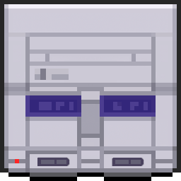

Palette Converter Hub
Palette Converter Hub
Convert between various palette formats used in classic arcade and console games.
 Arcade Goblins
Arcade Goblins
Convert palettes for Ghosts 'n Goblins arcade format. Handles RGB hex and separate RG/B byte formats.
- RGB Hex ↔ Arcade Format
- Separate RG/B byte input
- TPL file generation
- Dynamic color preview
 Arcade Ghouls
Arcade Ghouls
Convert palettes for Ghosts 'n Ghouls arcade format. Supports RGB hex and arcade "Fr gb" format conversion.
- RGB Hex ↔ Arcade Format
- TPL file generation
- Color rearrangement tool
- Dynamic color preview
 Genesis CRAM
Genesis CRAM
Convert palettes for Sega Genesis/Mega Drive CRAM format. Made for Ghouls 'n Ghosts but may work for other Genesis games. Supports multiple Genesis palette formats.
- RGB ↔ Genesis CRAM
- BGR32 & RGB32 formats
- 9-bit RGB conversion
- Dynamic color preview
 SNES Palette
Convert palettes for Super Nintendo (SNES) format. Made for Super Ghouls N' Ghosts but may work for other SNES games. Handles RGB hex and 15-bit BGR LSB format.
- RGB Hex ↔ SNES BGR
- 15-bit BGR LSB format
- TPL file generation
- Dynamic color preview
About
This collection of palette converters helps retro game developers work with color palettes from classic arcade and console games. Each converter supports real-time color preview, multiple format conversions, and TPL file generation.
All converters feature dynamic color previews - enter as many colors as you need and see them update in real-time!